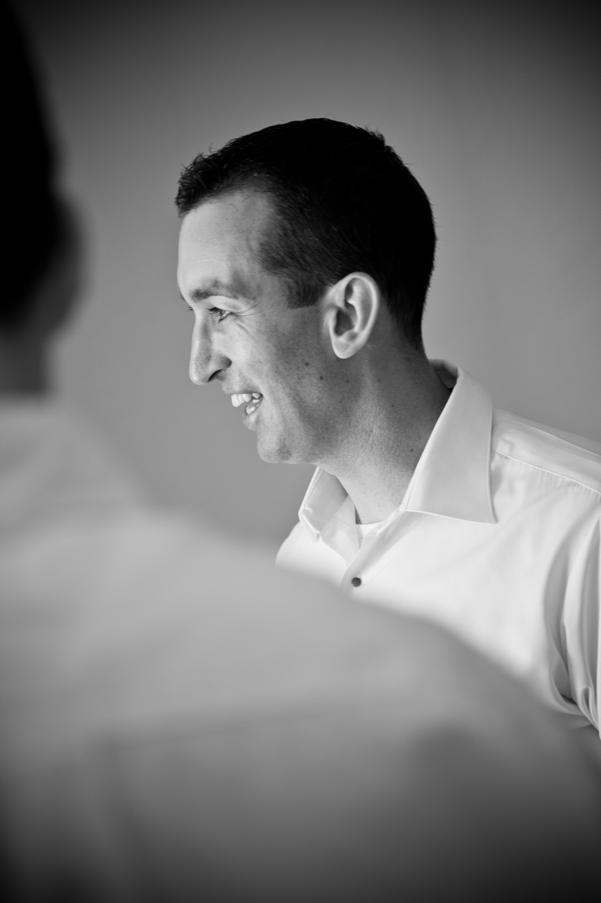

About Me
Originally from Sudbury, Ontario and upon completing my 3-year C.A.A.T. diploma in Business - Information Systems at Cambrian College, I moved to the National Capital Region (government-speak for the neighbouring cities of Ottawa, Ontario and Gatineau, Quebec) at the beginning of 2000 to accept a full-time position with the department of Public Works and Government Services Canada (PWGSC) in the sector of Hull and within the massive Place du Portage (PdP) office building complex.
Fast-forward to the year 2021 and I am now a mid-career professional, currently employed as an IT Project Manager with Shared Services Canada (SSC). Although I am truly grateful to have spent the past 20 years employed under various roles within the Government of Canada (GC), but I am now considering a major career pivot in my professional direction and looking forward to tapping back into my creative and entrepreneurial sides as the primary motivation for having enrolled into the Interactive Multimedia Design program at Algonquin College.
On the personal front, I am married to an amazing spouse, Mandy, and we are the proud parents of a 7-year old son, Mackayden. I am also a semi-proud “pet parent” to 3 indoor house cats, (Smokey, Bubble and Trouble) after having grown up with family dogs, but they really do bring a lot of joy to our daily lives and we all consider ourselves to be animal advocates.
Some of my favourite hobbies include:
- Running
- Biking
- Volleyball (Indoor & Beach)
- Landscaping / Gardening
“Owning our story and loving ourselves through that process is the bravest thing we’ll ever do."
-Brené